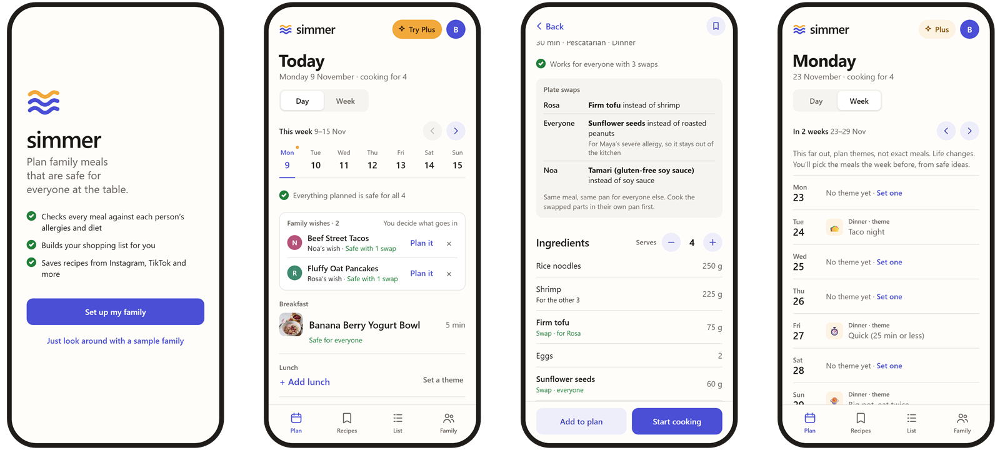
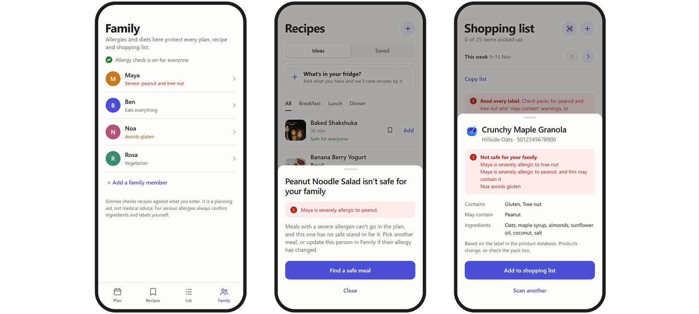
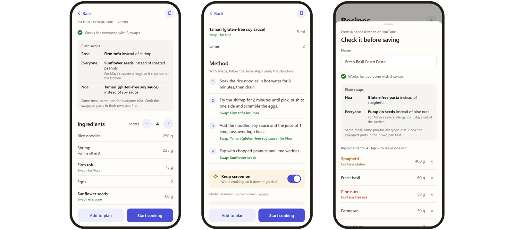
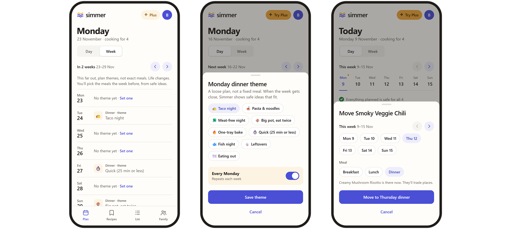
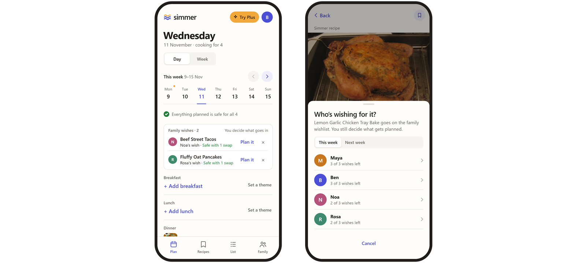
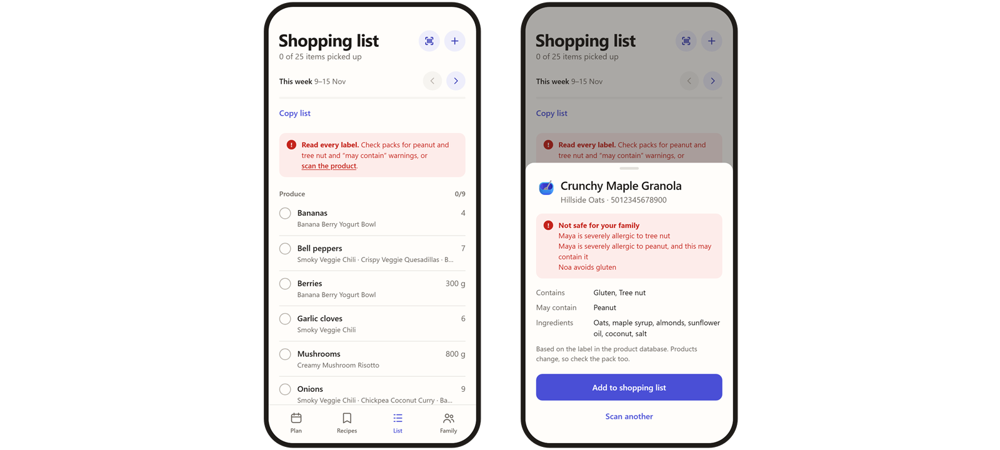
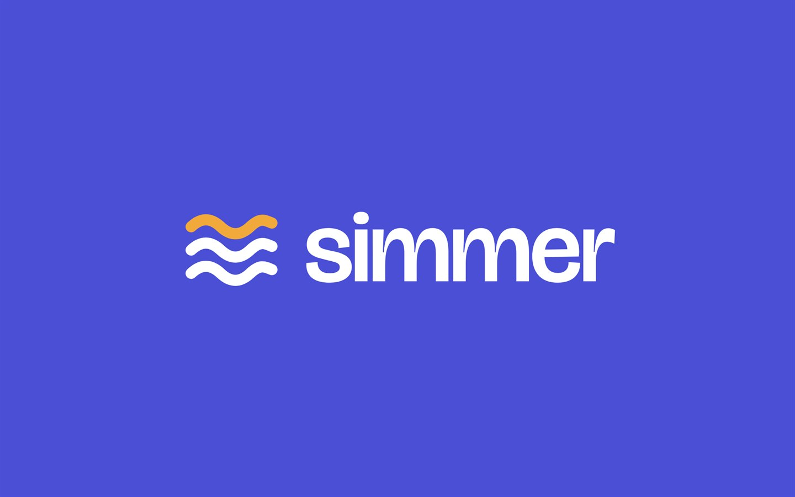
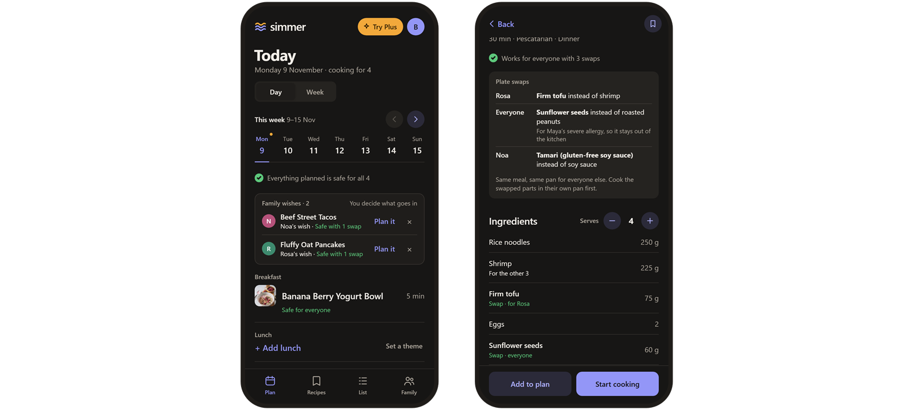

Simmer
One dinner that’s safe for everyone at the table.
Simmer is a family meal planner that checks every meal against each person’s allergies and diet, then builds the shopping list. I designed it end to end as a mobile prototype.
- Role
- Product design, end to end
- Platform
- Mobile web prototype
- Year
- 2026
- Built with
- HTML, CSS and JavaScript, coded with an AI assistant
- Prototype
- Try it on this page

Interactive prototype
Try the working app with the sample family: plan a week, open a recipe to see its plate swaps, or try to add a meal that isn’t safe for Maya.
Prefer a bigger view? Open the app in a new tab
01
The cook carries every allergy in their head
In a mixed household, planning dinner means checking every recipe against four people at once. One has a severe nut allergy, one avoids gluten, one is vegetarian. Most meal planners filter for a single profile, so the person who cooks does the cross-checking alone, every week, and the shopping list is where mistakes slip in.
I set out to design a planner where safety is built into every screen rather than bolted on as a filter: the plan, the recipes, the shopping list and the shop itself.
The sample family
Maya
Severe peanut and tree nut allergy
Noa
Avoids gluten
Rosa
Vegetarian
Ben
Eats everything, does most of the cooking
02
Safety has three levels, and colour belongs to it
A severe allergen is a hard stop: the meal can’t go in the plan, and the app says who it would hurt and why. A milder conflict is a heads-up you can keep or swap. Everything else simply says “Safe for everyone”.
Blocked
Severe allergy, no safe stand-in
Heads-up
Avoids, or a diet conflict
Safe
Safe for everyone
Green, amber and red are never used as decoration, so they always mean something. Scanning a product checks its label against the whole family, and the shopping list adds a “read every label” reminder whenever anyone has a severe allergy.

03
Swap ingredients, don’t throw recipes away
Filtering out every recipe that conflicts with someone left the sample family with only 5 of 19 recipes. Plate swaps keep the meal and change one part: gluten-free pasta on Noa’s plate, veggie mince for Rosa. The shopping list buys just enough of each, and each cooking step flags the swap where it matters.
From 5 to 18of 19 recipes work for the whole family with plate swaps
For a severe allergy the stand-in replaces the ingredient for everyone, so the allergen never enters the kitchen. When the allergen is the dish itself, like peanut noodle salad, it stays blocked.

04
The week: plan, wish, shop
Plan close, theme far
A fixed 28-dinner plan falls apart by Thursday. Simmer plans exact meals for this week and next. Further out you set themes like Taco night or Big pot, eat twice, and they turn into safe ideas when the week gets close.
When plans change, a meal moves to another day in two taps, and “push today and later back a day” shifts the rest of the plan, with Undo.

The family wishes, the cook decides
Voting sounds fair until the kids outvote every vegetable. Instead, each person gets three wishes a week, chosen only from meals that are safe for everyone. Wishes appear on the plan, and the cook plans them or lets them go.
Kids never need an account. The cook adds them with a first name and the foods that matter, and nothing else.

A shopping list that builds itself
Every planned meal adds its ingredients to one list, grouped by aisle and scaled to the number of people eating. Swapped ingredients are bought only for the plates that need them, and anything can be copied out to another app.

05
I asked how it would fail
Before calling it done, I ran a red-team review of the concept: an adversarial pass looking for where real families, real weeks and real business models would break it. Three of the decisions above came out of this review.
What could break
Subtractive filteringEvery restriction removes recipes, until only plain chicken and rice is left.
What changed
Plate swaps. The meal stays and only the conflicting parts change, per person.
What could break
The 4-week planSchedules shift and produce spoils, and the plan collapses on day 5.
What changed
Exact meals two weeks out, themes after that, plus move and push-back for the week itself.
What could break
Democracy in the kitchenMajority votes and vetoes stall planning and override the cook.
What changed
Three wishes each, from safe meals only. The cook keeps the final say.
What could break
Paywalling the core loopIf sharing is paid, the household can never try it together.
What changed
Sharing, wishes, swaps and every safety check are free. Plus sells convenience: themes 4 weeks out, Fill my week, unlimited imports.
06
Warm and homey, but calm
The first visual direction was a warm editorial look, and it felt too close to another project in my portfolio. I rebuilt it plain and airy, then added just enough brand: a heat-ripple mark chosen from six explored symbols, a Bricolage Grotesque wordmark and Onest for the interface, picked from three type options for its rounder, app-like feel.

Colours and type
#4A4FD6 · every action
#F2A93B · brand warmth
#FFFDFA · background
- Colour roles
- Indigo is for every action. Saffron is brand warmth only, never a warning. Green, amber and red are kept for safety, so they always mean something.
- Typefaces
- Bricolage Grotesque for the wordmark, and Onest for the interface, picked for its rounder, app-like feel.

What I’d do next
- Testing
- Test with families who live with severe allergies, starting with how much they trust a swap for an allergen.
- Real products
- Connect a real product database and grocery apps, so the list can go straight into an online cart.
- Kids’ wishes
- Give kids a simple “pass the phone” picker for their wishes, with no account needed.